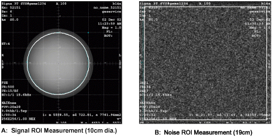

Operating Documentation
Direction 5670006, Rev# 1
Module Version 13.0, Version Date 9/27/11
Operating Documentation |
| Condition | Reference | Effectivity |
|---|---|---|
The following coil configuration name must be installed to run this tool: QUADKNEE | - | - |
The GE HD T/R Quad Extremity Coil has one coil name: HD T/R Knee/Foot Coil by Invivo, and can be used in the QUADKNEE mode. The image quality check uses two different protocols for signal and noise image acquisition:
Signal scan is an FSE sequence used to minimize susceptibility and B0 inhomogeneity effects. The signal scan must be run prior to the noise scan since the R1, R2, and TG values from the signal scan are used for the noise scan.
Noise scan is a GRE sequence that has a Control Variable (do_noise) to eliminate the Transmit RF completely during the scan.
The Data Sheet in the Finalization section at the end of this procedure explains the data required to calculate the individual element Signal-to-Noise Ration (SNR).
Place the baseplate of the coil on the patient table as shown.
Align the alignment mark on the coil to the zero position on the scale as shown.
Place the Phantom Positioner into the coil as shown.
| ||||
| Illustrations in this section show a phantom with green solution for 1.5T systems. Use phantoms with pink solution for 3.0T systems. | ||||
Place the large Cylindrical Unified Phantom in the phantom positioner.
Attach the anterior portion of the coil to the baseplate, and lock the coil.
From the Scan Desktop, start a new scan by selecting New Pt. For Patient ID, use geservice and 111 pounds for Patient Weight. Select [Patient Position] to open Protocols window.
At the magnet, press the [Alignment Light] button to turn on the light.
Move the table to align the coil to the alignment lights as shown using the alignment markings on the coil in front of the chimney.
Press the [Landmark] button to landmark the alignment.
Move the coil to the scan position by pressing the [Move to Scan] button, ensuring the cable does not get snagged.
At the console, set the protocols per the Signal section from the table below.
Click [Save Series] to download the protocols.
Run [Auto Prescan]. Record the R1, R2 and TG values.
Run [Scan].
A signal scan must be run prior to the noise scan as the same R1, R2 and TG values must be used for both of these scans. Do not run an Auto Prescan prior to the noise scan as the values will be changed.
Copy the signal scan series. Select Copy Series, right mouse click and Paste Series in Rx Manager.
Click [View Edit] and set the protocols per the Noise column in Table 1.
Select [Save Series] and [Prepare to Scan].
Open the Display CVs menu under Research Operations. Set the rhformat and do_noise CVs to 1.
Run [Manual Prescan], and do not make any changes. Verify that R1, R2, TG and Bandwidth did not change from the previously completed signal scan, and select [Done].
Run [Scan].
A circular Region of Interest (ROI) should be used for the signal measurements, and a rectangular ROI should be used for the noise measurements. The actual ROIs should be similar in shape and size to those shown below.
Illustration 8: Example ROIs

ROIs in both signal and noise images can be measured directly in the image browser. Click the [MEASURE] button, select the circular or rectangular shape, and adjust its size and orientation so that the ROI is similar to the illustration above. (Mean, standard deviation, and area of the ROI will display in the lower right corner of the image.)
For ROI measurements:
Calculate and record the values for mean signal, standard deviation of noise, and SNR in the Data Sheet found in the next section.